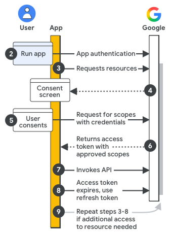

Page Summary
-
Authentication verifies the identity of the requestor (who), while authorization determines their access to resources (what).
-
Before accessing Google Workspace APIs, you need to configure your Google Cloud project, authenticate your app, and potentially obtain user consent.
-
Access tokens, granted by Google's authorization server, enable your app to access specific resources and functionalities.
-
Key terms to understand include authentication, authorization, credentials (API keys, OAuth 2.0 Client IDs, service accounts), scopes, and access tokens.
-
For accessing user data, you'll typically utilize OAuth 2.0 Client IDs or service accounts with domain-wide delegation of authority.
Authentication and authorization are mechanisms used to verify identity and access to resources, respectively. This document identifies key terms that you should know before implementing authentication and authorization in your app.
Authentication identifies who is making the request. Authorization identifies what resources the requester can access and what level of access they have. Authentication is a prerequisite for authorization. You can't determine what resources to access without first establishing the identity of the requester. For a more detailed definition, see the Important terminology section.
Consider the following simplified example of a hotel reservation. When you arrive at the hotel, the front desk clerk requests your ID to verify your reservation. Your ID authenticates you to the hotel. The front desk clerk gives you a hotel key. This key gives you access to certain resources at the hotel such as your hotel room, the gym, and the business center. The hotel key authorizes you to access those resources.
Process overview
The following diagram shows the high-level steps of authentication and authorization for Google Workspace APIs:

Configure your Google Cloud project and app: During development, you register your app in the Google Cloud console, defining authorization scopes and access credentials to authenticate your app with an API key, end user credential, or service account credential.
Authenticate your app for access: When your app runs, the registered access credentials are evaluated. If your app is authenticating as an end user, a sign-in prompt might be displayed.
Request resources: When your app needs access to Google resources, it asks Google using the relevant scopes of access you previously registered.
Ask for user consent: If your app is authenticating as an end user, Google displays the OAuth consent screen so the user can decide whether to grant your app access to the requested data.
Send approved request for resources: If the user consents to the scopes of access, your app bundles the credentials and the user-approved scopes of access into a request. The request is sent to the Google authorization server to obtain an access token.
Google returns an access token: The access token contains a list of granted scopes of access. If the returned list of scopes is more limited than the requested scopes of access, your app disables any features limited by the token.
Access requested resources: Your app uses the access token from Google to invoke the relevant APIs and access the resources.
Get a refresh token (optional): If your app needs access to a Google API beyond the lifetime of a single access token, it can obtain a refresh token.
Request more resources: If additional access is needed, your app asks the user to grant new scopes of access, resulting in a new request to get an access token (steps 3–6).
Important terminology
The following list identifies terms related to authentication and authorization:
- Authentication
The act of ensuring that a principal, which can be a user or an app acting on behalf of a user, is who they say they are. When writing Google Workspace apps, you should be aware of these types of authentication:
- User authentication
- The act of a user authenticating (signing in) to your app. User authentication is usually carried out through a sign-in process in which the user uses a username and password combination to verify their identity to the app. User authentication can be incorporated into an app using Sign In With Google.
- App authentication
- The act of an app authenticating directly to Google services on behalf of the user running the app. App authentication is usually carried out using pre-created credentials in your app's code.
- Authorization
The permissions or "authority" the principal has to access data or perform operations. Your app requests authorization by informing the user that the app wishes to act on their behalf. If the user allows the request, the app uses its unique credentials to obtain an access token from Google.
- Credential
A form of identification used in software security. In terms of authentication, a credential is often a username and password combination. In terms of authorization for Google Workspace APIs, a credential is usually some form of identification, such as a unique secret string, known only between the app developer and the authentication server. Google supports these authentication credentials: API key, OAuth 2.0 Client ID, and service accounts.
- API key
- The credential used to request access to public data, such as data provided using the Maps API. Public Google Workspace files shared using the "Anyone on the Internet with this link" setting can also be accessed this way, though most Google Workspace data requires OAuth 2.0.
- OAuth 2 client ID
- The credential used to request access to user-owned data. This is the primary credential used when requesting access to data using Google Workspace APIs. This credential requires user consent.
- Client secret
- A string of characters that should only be known by your application and the authorization server. The client secret protects the user's data by only granting tokens to authorized requesters. You should never include your unencrypted client secret in your app. We recommend storing the client secret securely. For more information, see Handle client credentials securely.
- Service account keys
- Used by service accounts to gain authorization to a Google service.
- Service account
- A credential used for server-to-server interactions, such as an application without a user interface that runs as a process to access data or perform operations. Service accounts are usually used to access cloud-based data and operations. However, when used with domain-wide delegation of authority, they can be used to access user data.
- Scope
An OAuth 2.0 URI string that defines a level of access to resources or actions granted to an app. For Google Workspace, authorization scope URIs contain the Google Workspace app name, what kind of data it accesses, and the level of access. Users of your app can review requested scopes and choose what access to grant, then Google's authentication server returns permitted scopes to your app in an access token. For more details, refer to How to choose scopes for your app.
- Authorization server
Google's server for granting access, using an access token, to an app's requested data and operations.
- Authorization code
A code sent from the authorization server used to obtain an access token. A code is only needed when your application type is a web server app or an installed app.
- Access token
A token granting access to a Google Workspace API. A single access token can grant varying degrees, known as scopes, of access to multiple APIs. Your app's authorization code requests access tokens and uses them to invoke Google Workspace APIs.
- Resource server
The server hosting the API that your app wants to call.
- OAuth 2.0 framework
A standard that your app can use to provide it with "secure delegated access" or access to data and operations on behalf of the app's user. The authentication and authorization mechanisms you use in your app represent your implementation of the OAuth 2.0 framework.
- Principal
An entity, also known as an identity, that can be granted access to a resource. Google Workspace APIs support two types of principals: user accounts and service accounts. For more details, refer to Principals.
- Data type
In the context of authentication and authorization, data type refers to the entity that owns the data that your app is trying to access. There are three data types:
- Public domain data
- Data accessible by anyone, such as some Google maps data. This data is usually accessed using an API key.
- End-user data
- Data belonging to a specific end user or group, such as a specific user's Google Drive files. This data type is usually accessed using an OAuth 2 client ID or service account.
- Cloud data
- Data owned by a Google Cloud project. This data type is usually accessed by a service account.
- User consent
An authorization step requiring the user of your app to authorize the app to access data and perform operations on the user's behalf.
- Application type
The type of app you are going to create. When creating credentials using the Google Cloud console, you are asked to select your application type. Application types are: Web application (JavaScript), Android, Chrome Extension, iOS, TVs and Limited Input devices, and Desktop app (also called an "installed app").
- Service account
A special type of Google account intended to represent a non-human user that needs to authenticate and be authorized to access data. Your application assumes the identity of the service account to call Google APIs, so that the users aren't directly involved. By themselves, service accounts cannot be used to access user data customarily accessed using Google Workspace APIs. However, a service account can access user data by implementing domain-wide delegation of authority. For more details, refer to Understanding service accounts.
- Domain-wide delegation of authority
An administration feature that can authorize an application to access user data on behalf of users in the Google Workspace organization. Domain-wide delegation can be used to perform admin-related tasks on user data. To delegate authority this way, Google Workspace administrators use service accounts with OAuth 2.0. Because of the power of this feature, only super admins can enable domain-wide delegation of authority. For more details, refer to Delegating domain-wide authority to a service account.
Next step
Configure your app's OAuth consent screen to ensure users can understand and approve what access your app has to their data.